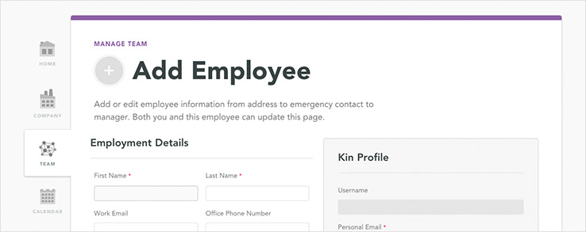
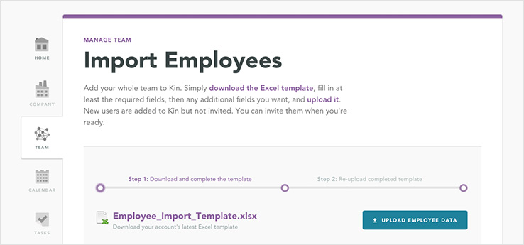
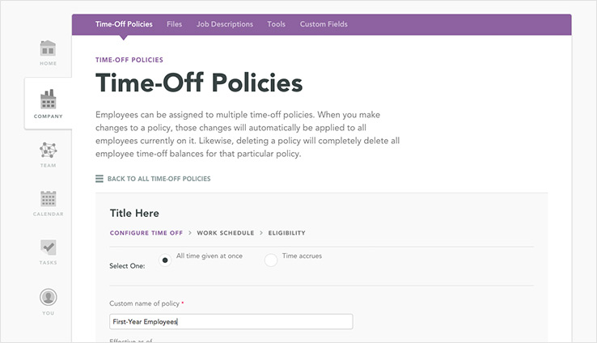
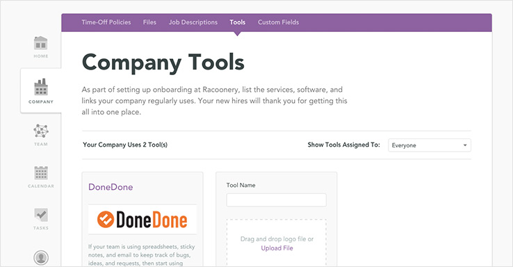
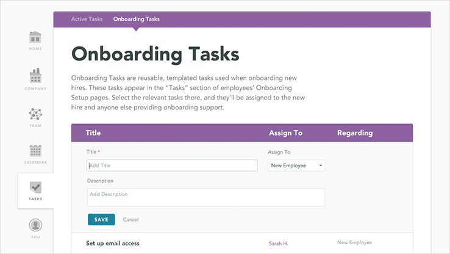
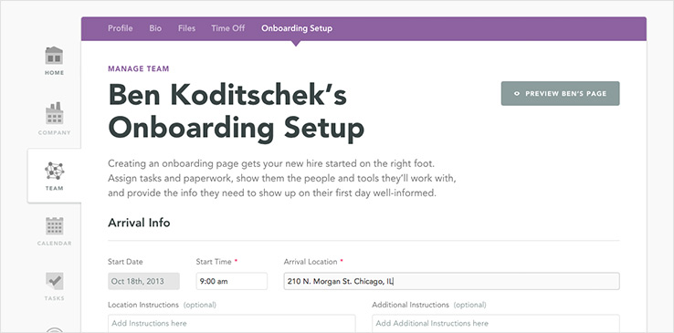
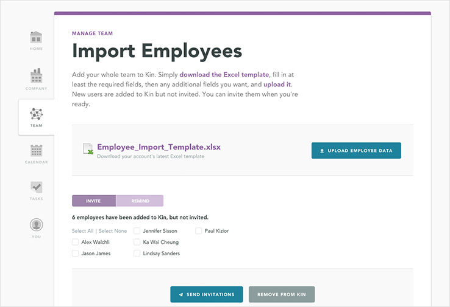

Woo-hoo!
Let’s get started, Jude.
Kin is a simple tool to help you manage ok’s workplace. It’s easy to set up and use. Here’s a few steps to get you started.
- Getting Started
- Your Overview
Would you like a demo and personal introduction to Kin?
Just let us know, and we’ll be in touch.
Step 1: Add Employees.
You can add employees one at a time or import them all at once via Excel. Once you’ve configured the rest of your account and you’re ready for everyone to sign in, you’ll need to invite them. Add a new employee Import your entire team
 Step 3: Set up your company’s time-off policy.
Kin allows as many time-off policies as you’d like. It’s pretty standard to have one for vacation, one for sick leave, and one for flex-time. Creating a policy is a simple, two-step process. First, tell Kin details about how time off accrues and by how much, then assign the policy to one or more employees. Set up a policy
Step 4: Set up tools and tasks for the onboarding experience.
If you’re using Kin’s beautiful onboarding page for new hires, you should add a few tools which your new hire will be using.
Tools are the websites and resources your team uses day in and day out. Add Tools
You’ll also want to set up the recurring tasks which every new hire needs to complete (“Bring a photo ID”), and which your administrative team needs to help with (“Set up email access”). Set up onboarding tasks
Finally, on an employee’s onboarding page, you can configure which of those tasks and tools a new hire will see, along with who they will be working with, and where they need to go on day one. SSelect an Employee to Set Up Their Onboarding Page
Step 5: Invite your team!
Now that you’ve gotten Kin’s gears configured, it’s time to invite everyone. On the Import Employees page, select the employees you’d like to invite and click “Send Invitations.” Your team will then receive email notifications to sign into Kin. Note you can individually invite employees via their profile page. Send invitations
Don’t go it alone!
Craig Bryant
Founder, Product Manager
Lindsay Sanders
Customer Support
Waylon Martinez
Lead Software Engineer
We share a mission: to make your company a better place to work at. If you have questions about Kin, human resources, or best practices at your company, we’re here for you.